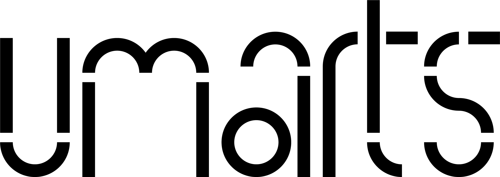

Links to similar projects
To the left are a set of projects that offer some interesting design solutions to the publishing of artistic research and operate within similar areas to UmArts.
Brand Option 1 — Um...
Using the idea of the Um... as a sound emphasising the tentative nature of the work undertaken by UmArts. Offering a break from consistent line of thought whilst you are working through something.
Speech disfluency is any of various breaks, irregularities, or non-lexical vocables which occur within the flow of otherwise fluent speech. wikipedia
Possibility to stylise tagging system as Um...decolonisation Um...commons Um...anthropocene etc.


Visually making use of mark making in the form of sketches, highlights and annotations.
Zodiak as typeface, developed by Indian Type Foundry and freely available for print & web. Based around Century's letterforms, clean and legible for both headings and body text but with personality.
Support for Sámi (Inari), Sámi (Lule), Sámi (Northern), Sámi (Southern)

Brand Option 2 — Components
A set of basic components to be used throughout the site that are used in different configurations and then make up the logo. Pointing to the composite nature of the work being undertaken, possible different lines of thougt feeding into the whole.


Satoshi as typeface, developed by Indian Type Foundry and freely available for print & web. A combination of classic grotesk but with a slightly more geometric character.
Support for Sámi (Inari), Sámi (Lule), Sámi (Northern), Sámi (Southern)
Colors
Green as primary colours with 4 shades and a set of complimentary colours derived by analagous colour pattern.